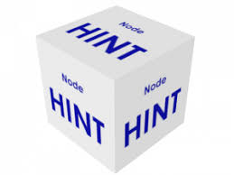
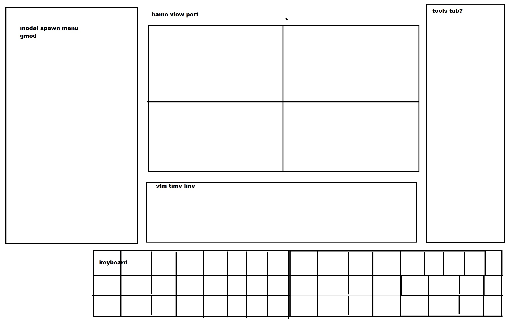
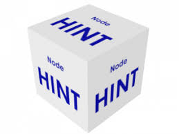
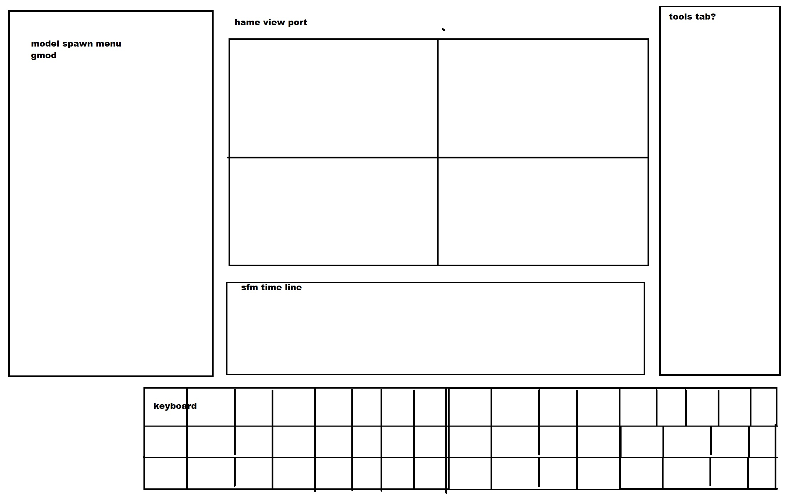

as some of you may know, axolotl in void and scrap
have made a fanmade sub division of the interloper arg
but we, the people actually experiencing the arg are missing a key
tool..
the survey box
we can only speculate how it functions but
we got many hints on how it could be used
 

colored text!


colored text!